טלוויזיותTVs
לד, LCD ופלזמה. תיקון, התקנה, ושירות גם בבית הלקוח.LED, LCD and plasma. Repair, installation, and service at your home too.
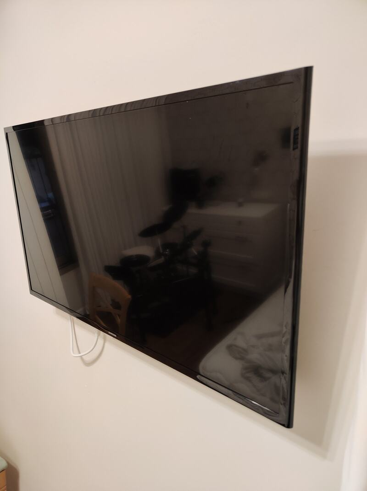
מגוגל מפותGoogle Mapsקונספט לדוגמה שנבנה עבור אלקטרון – מעבדת אלקטרוניקה · זה אינו האתר הרשמי של העסקA sample concept built for Elektron electronics lab · This is not the business’s official website
טלוויזיות לד, LCD ופלזמה, מסכי מחשב ומחשבים ניידים ונייחים. בחיפה ובקריית טבעון.LED, LCD and plasma TVs, computer screens, laptops and desktops. In Haifa and Kiryat Tivon.
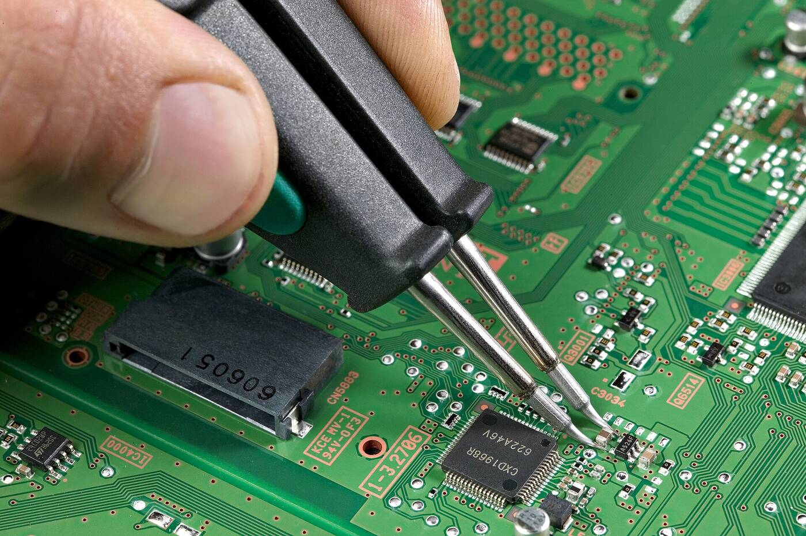
תמונה להמחשהIllustrative photo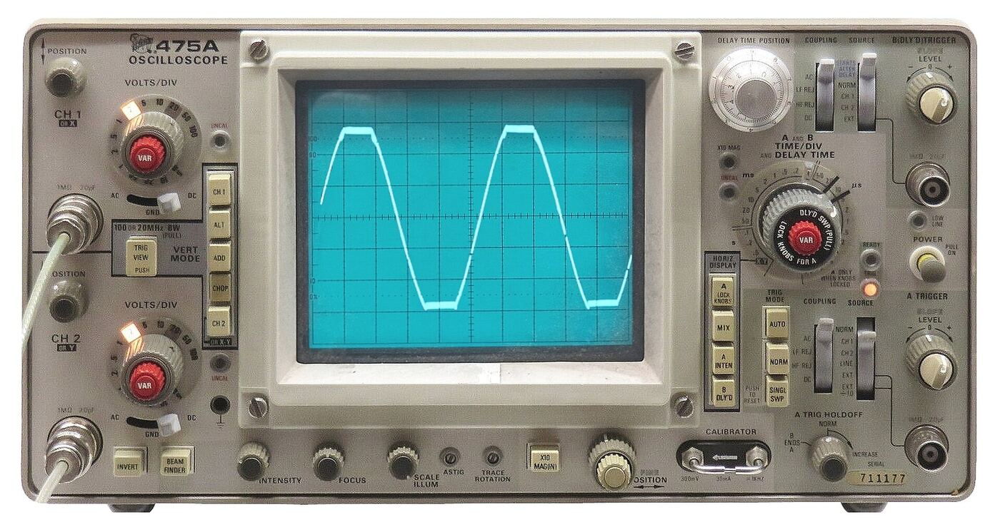
א׳–ה׳ 9:00–20:00
ו׳ 9:00–14:00 · שבת סגורSun–Thu 9:00–20:00
Fri 9:00–14:00 · Sat closed
טלוויזיות לדLED TVs
מתקנים במעבדה של אלקטרוןRepaired at the Elektron lab
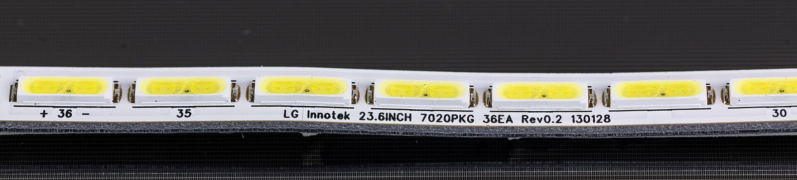
בטלוויזיית לד, האור מגיע מפסי לדים שמאחורי המסך. כשפס אחד נשרף, התמונה נעלמת.In an LED TV the light comes from LED strips behind the panel. When one strip burns out, the picture disappears.
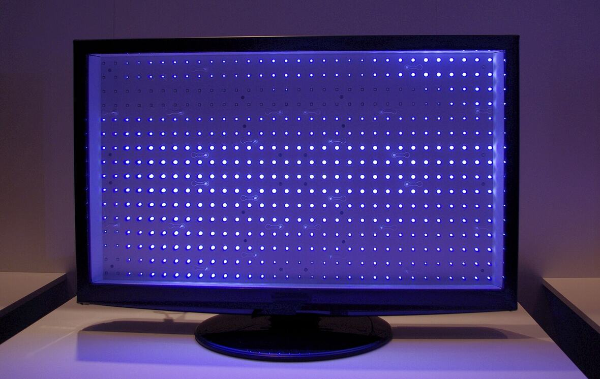
תמונה להמחשהIllustrative photoככה עובר מכשיר במעבדה של אלקטרון.How a set goes through the Elektron lab.
מספרים לאמנון מה קרה. תמונה של המסך עוזרת.Tell Amnon what happened. A photo of the screen helps.
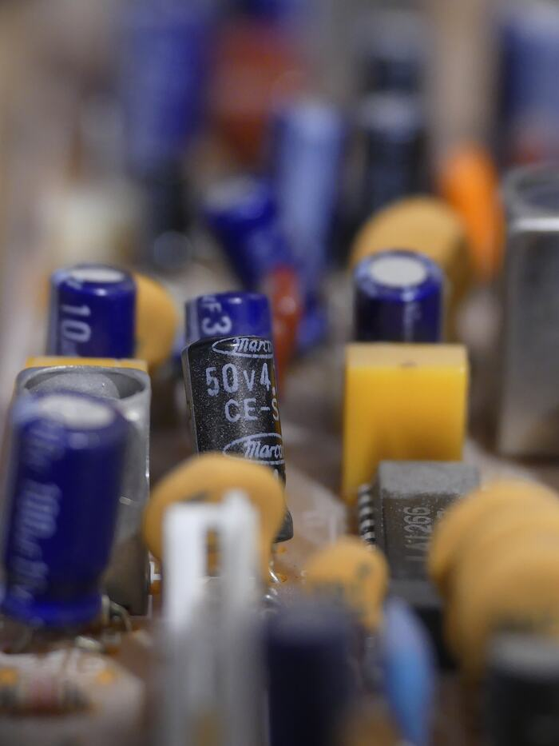
המכשיר נפתח, ומודדים את המעגלים עד שמוצאים את התקלה.The set is opened and its circuits are measured until the fault shows.
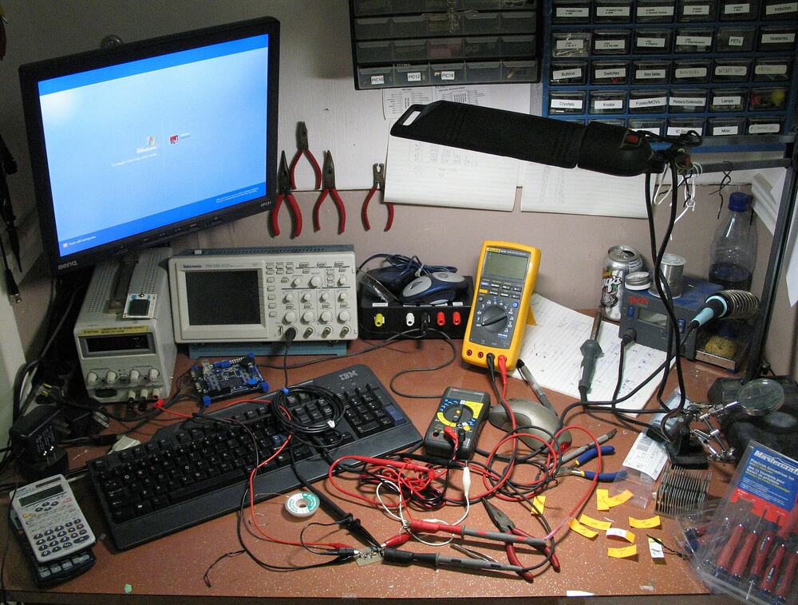
הרכיב התקול יוצא, וחדש מולחם במקומו.The faulty part comes out and a new one is soldered in.
בודקים שהאות נקי, והמכשיר חוזר אליכם.The signal is checked clean and the set goes back to you.
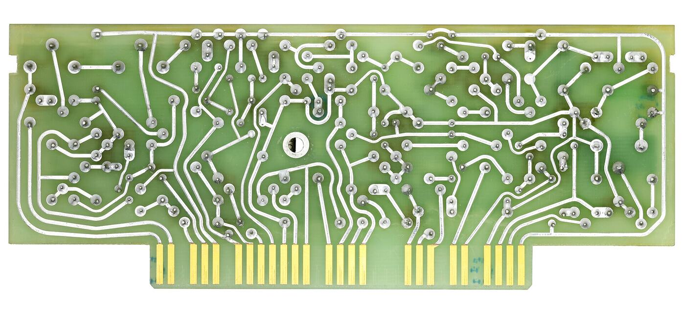
מסכים ומחשבים לבית, וגם מכשירים לקיבוצים ולמוסדות.Screens and computers for the home, and appliances for kibbutzim and institutions.
תארו את התקלהDescribe the faultלד, LCD ופלזמה. תיקון, התקנה, ושירות גם בבית הלקוח.LED, LCD and plasma. Repair, installation, and service at your home too.

מגוגל מפותGoogle Mapsמסכים מכל הסוגים, עם תאורת לד או בלעדיה.Screens of every kind, with or without LED backlight.
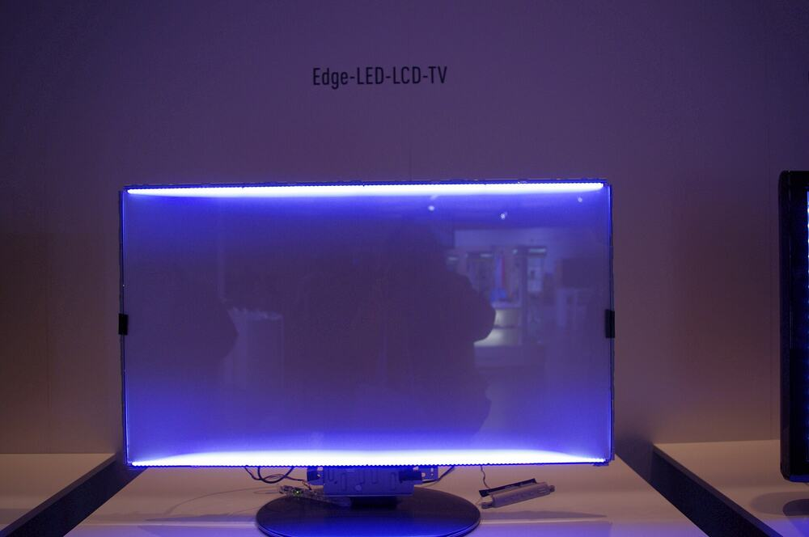
ניידים ונייחים.Laptops and desktops.
תיקון מכשירי חשמל ומסכים.Repair of electrical appliances and screens.
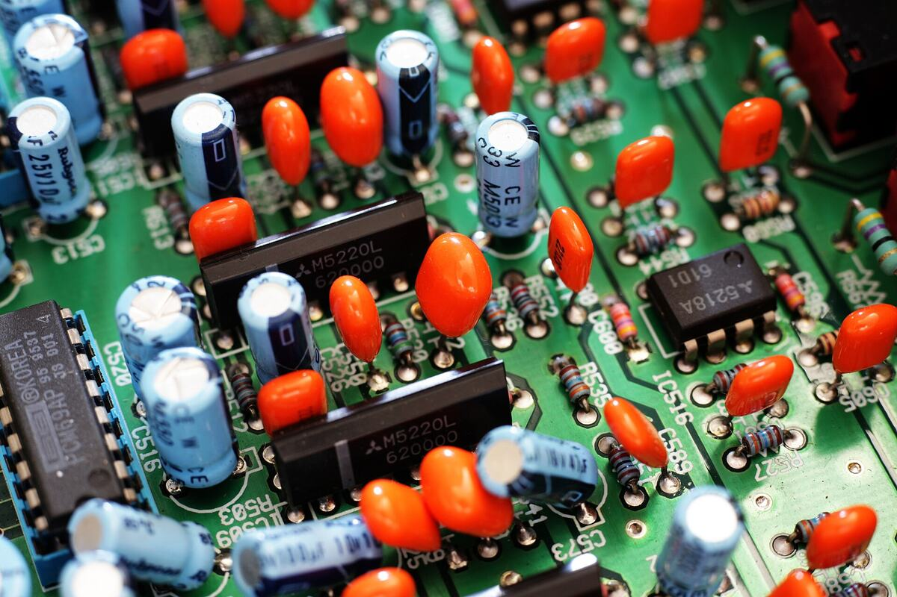
בוחרים מכשיר ותקלה, וההודעה נכתבת לבד.Pick the device and the fault, and the message writes itself.
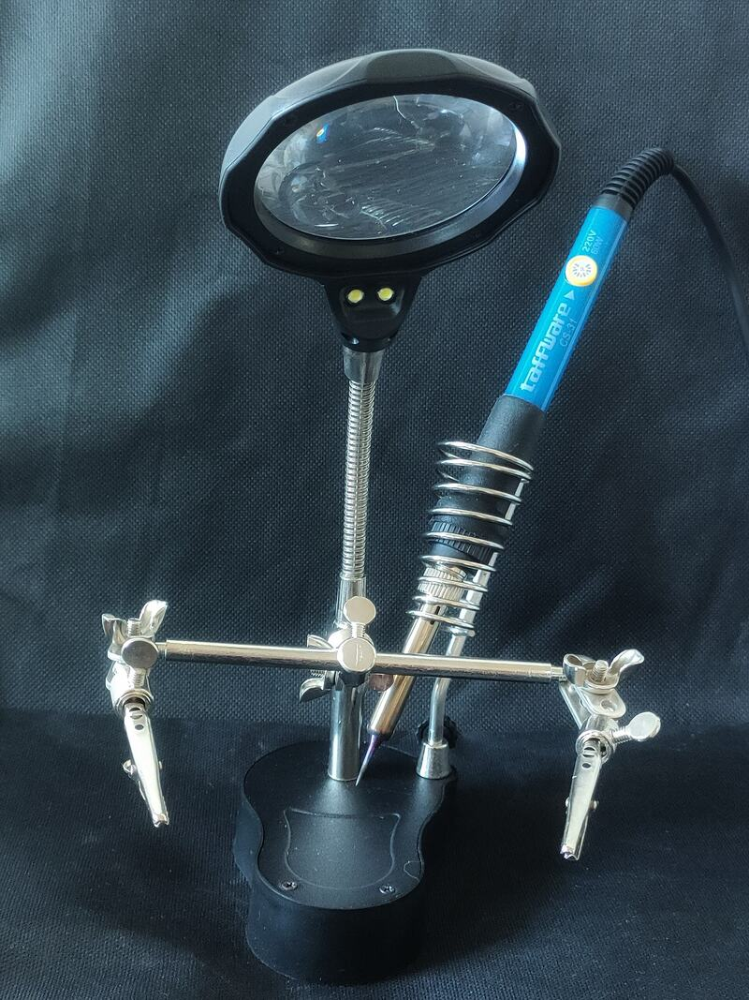
לפני שמגיעים, כדאי להתקשר ולתאם.Please call ahead before coming in.
אמנון ותמר 12, חיפה12 Amnon VeTamar St, Haifa
בגוגל מפותOn Google Maps
כיכר בן גוריון 2, קריית טבעון2 Ben Gurion Square, Kiryat Tivon
בגוגל מפותOn Google Maps
טלוויזיות לד, LCD ופלזמה, מסכי מחשב, ומחשבים ניידים ונייחים. לקיבוצים ולמוסדות גם מכשירי חשמל.LED, LCD and plasma TVs, computer screens, laptops and desktops. For kibbutzim and institutions, electrical appliances too.
יש גם שירות בבית הלקוח. מתאמים בטלפון או בוואטסאפ.Home service is available too. Arrange it by phone or WhatsApp.
כן, בוואטסאפ למספר 054-433-5732. תמונה או סרטון קצר של המסך עוזרים להבין מה קרה.Yes, on WhatsApp at 054-433-5732. A photo or a short video of the screen helps.
לאמנון ותמר 12 בחיפה, או לכיכר בן גוריון 2 בקריית טבעון. התקשרו לפני כן, כדי לתאם.To 12 Amnon VeTamar St in Haifa, or 2 Ben Gurion Square in Kiryat Tivon. Call first to arrange it.
יש מסך שכבה?A screen gone dark? דברו עם אמנון.Talk to Amnon.
072-322-3821